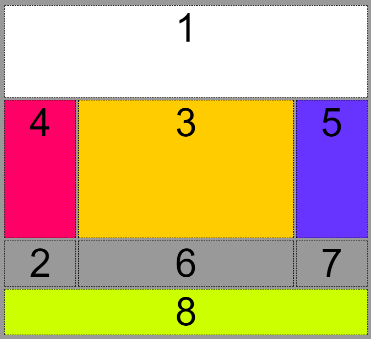
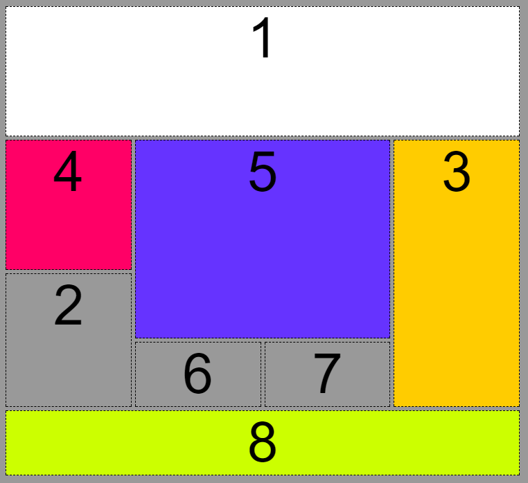
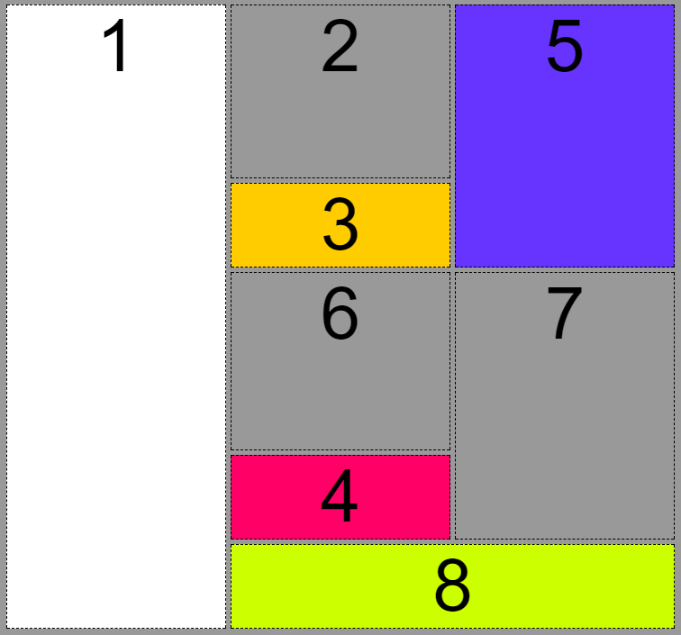

CSS
CSS eller ”Cascading Style Sheets” skaber kontrol over udseende af HTML, derved struktur og udseende. ”Styles” angives som ”Rules”, kan navngives og refereres i HTML.
- Et Style Sheet er en samling af ”Rules”
- Cascading henviser til regler, og hvornår hvilke styles glæder.
Om CSS
CSS var udviklet af Håkon Wium Lie, og blev senere adopteret af World Wide Web Consortium, som senere tog sig af standardiseringsarbejdet det gjorde CSS til hvad det er i dag.
- CSS var først understøttet af Internet Explorer 3 (IE3)
- Netscape 3 gjorde det kort tid efter, men havde mange fejl som forringede bruger oplevelsen og ledte til Browser Krigen
- Standarden for CSS har udviklet sig meget siden den første version.
Måder at anvende CSS
Embedded CSS og Link CSS er to forskellige formater, der et også muligheden for Inline CSS, men bryder strukturen og kan skabe en rodet helhed.
- Embedded CSS er integreret i HTML, og er del af et ”Style” tag.
- Link CSS referere til en separat CSS Fil, og linkes til op i Meta Tags i HTML filen.
Opbygning af CSS
CSS er delt op i nogle helt faste elementer.
Først har vi en selector, det er den, der fortæller, hvad der skal styles på. Her på billedet er det fx alle links.
Derefter kommer deklaration start {. Inden i den er selve deklarationen, den består af en property og en value. Property er det, er skal ændres ved selectoren, og value er det det skal ændres til. Efter deklarationen, kommer deklaration slut }.
Der kan sagtens være flere deklarationer per HTML element. Her det bare vigtigt at afslutte hver enkelt deklaration med semi-kolon.
CSS er opdelt i faste elementer, og er altid bygget op på den samme måde. Først anvender man en selector, det kan være en class eller en Id angivet i HTML filen, som man så anvender CSS Selectors til at kalde på.
Derefter anvender man deklaration start, som er en lille klamme ( { ) som indikere hvor koden til CSS starter. Her består alle CSS-elementer af en egenskab og en værdi, som for eksempel at sætte en background-color.
Et Eksempel:
#id {
Background-color: #FFF; ”Property: Value;” (Egenskab og Værdi)
}
Selectors
Id
Id, eller # kalder på er specifikt element inde i HTML filen, og redigere kun dén, når den bliver kaldt på.
ID angives inde i HTML i elementets start tag, som f.eks.
<div id="et_id">
Id bliver kaldt på inde i CSS således:
#id {
Property: Value;
}
Class
Class er anvendt til at kalde på et gentagende element, og bliver derfor brugt til at skabe identisk udseende igennem hele websitets design.
For at angive en class, gentager man den samme funktion i HTML som med ID, og erstatter ”id=” med ”class=”, f.eks.
<div class="en_class">
Som kommer til at kaldes på således inde i CSS:
.class {
Property: Value;
}
CSS Grids
CSS Grids er den seneste store udviking og den nye standard inden for CSS og bliver som omtalt som revolutionerende inden for sin responsive designteknik.
Før introduktionen til CSS Grids, havde der aldrig været en "god" måde at placere elementer i CSS før. Før Grids blev Float konstant anvendt, som er kendt for at være en positionerings "hack".
Float og Clear er meget om at arbejde i trial og error.
CSS Grids bygger på FLEXBOX, men er egnet til at håndtere to dimensioner istedet for FLEXBOX's ene.
Eksempel på CSS Grid
<!DOCTYPE html>
<html lang="da">
<head>
<meta charset="utf-8">
<title>CSS Grid-eksempler</title>
<link rel="stylesheet" href="mit.css">
</head>
<body>
<div id="mitgrid">
<div id="felt1">1
</div>
<div id="felt2">2
</div>
<div id="felt3">3
</div>
<div id="felt4">4
</div>
<div id="felt5">5
</div>
<div id="felt6">6
</div>
<div id="felt7">7
</div>
<div id="felt8">8
</div>
</div>
</body>
</html>
#mitgrid {
display: grid;
grid-gap: 5px;
grid-template-columns: 1fr 1fr 1fr 1fr;
grid-template-rows: 2fr 2fr 1fr 1fr;
grid-template-areas:
"a a a a"
"b e e c"
"d e e c"
"d f g c"
"h h h h"
}
#mitgrid div:nth-child(1){
background-color: #FFF;
grid-area: a;
}
#felt2 {
grid-area: d;
}
#mitgrid div:nth-child(3){
background-color: #FC0;
grid-area: c;
}
#felt4 { background-color: #F06;
grid-area: b;
}
#felt5 {
background-color: #63F;
grid-area: e;
}
#felt6 {
grid-area: f;
}
#felt7 {
grid-area: g;
}
#felt8{
background-color: #CF0;
grid-area: h;
}
Resultat

Andre Eksempler på Grids
  Kilder
Niels Østergaard - Interaktionsudvikling - Erhvervs Akadami Dania Skive